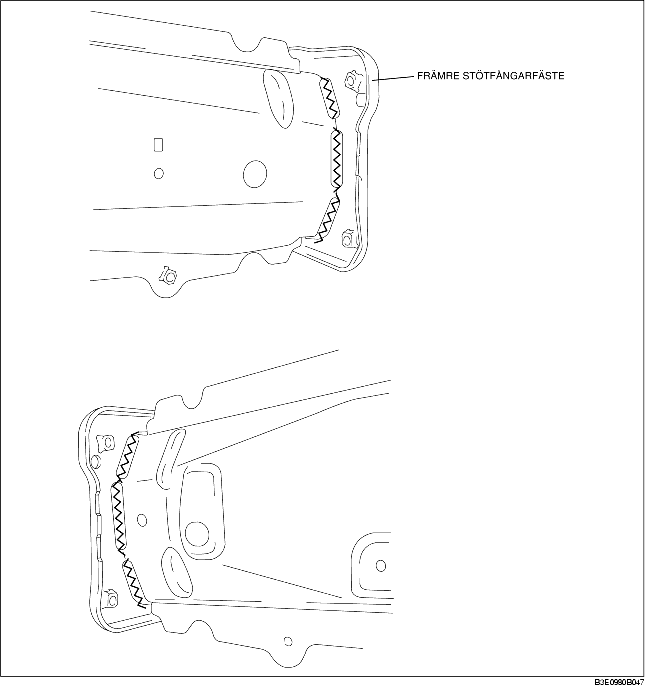

DEMONTERING AV FRÄMRE STÖTFÅNGARFÄSTE
B3E098053896B01
1. Demontera det främre stötfångarfästet.
Försiktigt
• Endast tillvägagångssättet för den vänstra sidan beskrivs. Formen på den högra sidan är annorlunda.
